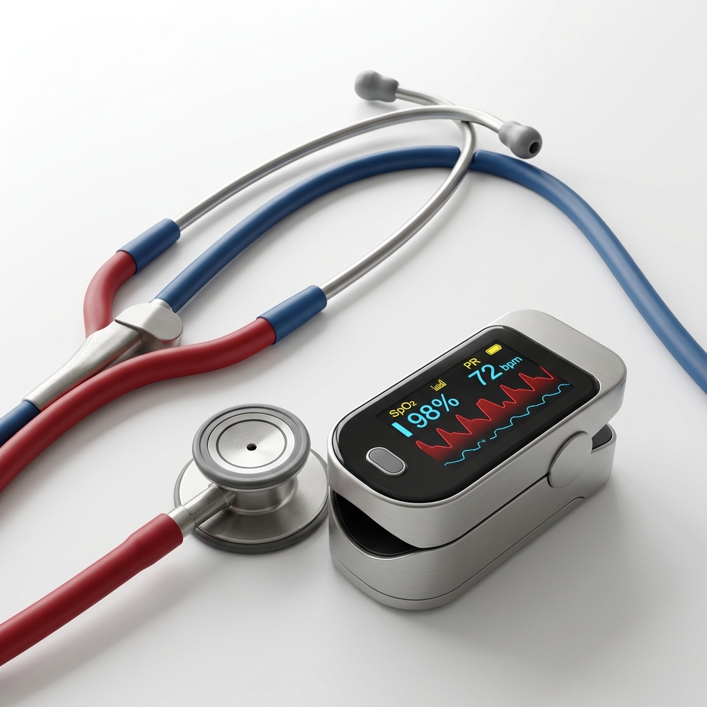

مبادرة توعوية
للمجتمع السعودي
تعلم الإسعافات الأولية..
تعلم الإسعافات الأولية..
لتنقذ
حياة من تحب
أول 5 دقائق هي الفاصل بين الحياة والموت. كن مستعداً دائماً للتدخل الصحيح في الحالات الطارئة بكل ثقة ومعرفة.
تعريف موجز
ما هي الإسعافات الأولية؟
هي العناية الأولية والفورية والمؤقتة التي تُقدم للمصاب بمرض أو جرح مفاجئ قبل وصول سيارة الإسعاف أو الطبيب المختص. هي ليست علاجاً بل تدخل إنقاذي قد يكون السبب في بقاء الشخص على قيد الحياة.
لماذا هي مهمة؟
- الحفاظ على حياة المصاب ومنع الوفاة.
- منع تدهور الإصابة والحد من المضاعفات الخطيرة.
- مساعدة المصاب في الوصول لحالة الاستقرار حتى وصول الطاقم الطبي.
وصول سريع
كيف يمكننا مساعدتك اليوم؟
وسائط تعليمية تفاعلية
شاهد فيديوهات قصيرة وإنفوجرافيك يوضح لك الخطوات العملية لإسعاف المصابين بطريقة بصرية سهلة الفهم.
انتقل للمكتبة المرئية
